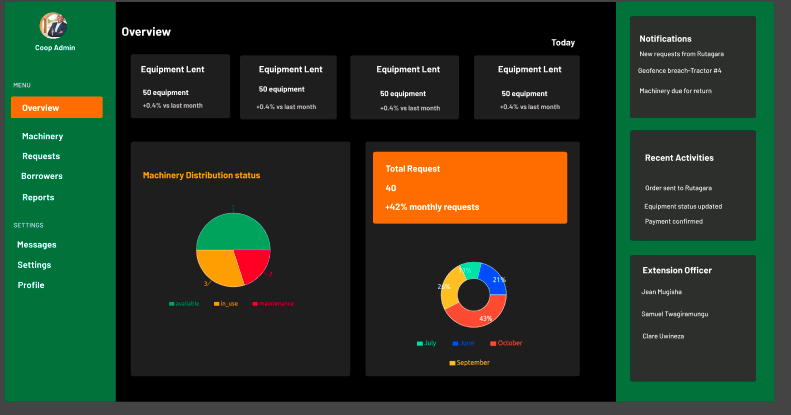
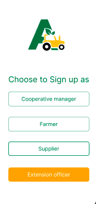
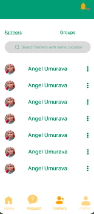

User Guide
Farmers
Key actions: Place machinery orders to cooperatives, receive updates, make
payments via mobile money
Step by step
- Log in to the mobile app using your phone number.
- Navigate to
Request machine.
- Fill out the request form with your preferred machine and duration.
- Wait for cooperative confirmation.
- Once notified, make payment.
- Receive the machine and begin use.
Cooperative management dashboard
Cooperative Officers
Key actions: Manage orders, supplier coordination, payments, machine
tracking
Step-by-step
- Log in to the web-based React dashboard.
- View incoming orders in the Orders Panel.
- Contact machine suppliers to source the requested machines.
- Notify the farmer once availability is confirmed.
- Receive payments from the farmer.
- Make payments to suppliers.
- Upon machine arrival, install IoT tracking devices.
- Record the machine in the system and assign it to the requesting farmer.
- Monitor machine location and condition reports in real-time.
- Receive alerts if a machine exits its geofenced area.

Cooperative management dashboard
Machine Suppliers
Key actions: Confirm availability, deliver machines, receive payments
Step-by-Step
- Log in to your supplier portal.
- View machine requests and confirm availability.
- Coordinate delivery with the cooperative.
- Deliver the machine and mark it as “delivered”.
- Receive payment from the cooperative.
Extension Officers
Key actions: Field inspections, update machine status and reports
Step-by-Step
- Open the Extension Officer mobile app.
- View your assigned machine list.
- Visit each farmer’s location during fieldwork.
- Check machine functionality and note any issues.
- Update machine status: Working, Needs Maintenance, Broken, etc.
- Submit field report.
Reports are synced to the system and visible to cooperatives.


Extension Officer mobile app
Notes
- All users have role-based logins and permissions.
- Alerts for geofence violations are triggered automatically and shown to cooperatives.
- Mobile apps are optimized for offline mode, with syncing once reconnected.
- Machine history and condition logs are accessible to both cooperatives and extension
officers.
AI Component
Purpose of AI in AgriTech
Artificial Intelligence plays a key role in helping cooperatives make smarter, faster, and more
informed decisions when sourcing machines from suppliers. Instead of relying on manual judgment, the
AI system analyzes data to recommend the best suppliers based on:
- Historical delivery performance
- Machine quality and condition reports
- Supplier reliability
- Timeliness of past deliveries
- Extension officer feedback from the field
How It Works
Data Collection
The system gathers real-time and historical data from machine records, supplier logs, feedback
reports, and IoT tracking history.
Evaluation Model
A lightweight AI model (Agentic AI) processes this data to rank suppliers based on machine quality,
field performance, and overall reliability.
Recommendation
When a cooperative receives a farmer’s request, the AI suggests the top 1–3 suppliers most likely to
meet quality, speed, and reliability needs.
Learning Over Time
The more data it gathers, the smarter the system gets. For example, if one supplier’s machines
consistently break down or arrive late, their ranking is adjusted accordingly.
Future Improvements
- Automated fraud detection in supplier entries
- Natural language query handling (e.g., “Find best supplier for dry season”)